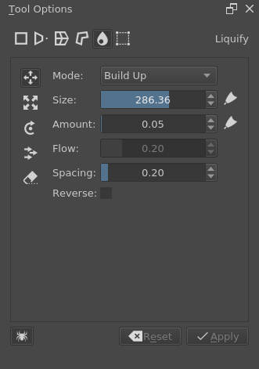

變形工具¶

變形工具可以迅速地對選取區域或圖層進行變形。基本的變形選項包括縮放，旋轉和切變。此外，也會有諸如透視、網面，外框和液化的進階變形。這些都是讓你完全控制你的選取區域或圖層的強大選項。
在你初次調用這個工具時，在角落和四邊會有控制柄，你可以用來縮放選取區域或圖層。把游標放在控制柄的上面或側面可以進行旋轉。在選取區域或圖層範圍內拖曳來進行移動。
你可以在工具選項面板調整變形工具的參數。這些參數被分成 5 個部分：自由變形，網面，透視，外框和液化。

自由變形面板。¶
自由變形¶
這裡可以用來做基本的旋轉，縮放，翻轉，如果按住 Ctrl 鍵甚至能做透視歪斜。而按住 Shift 鍵會在維持寬高比的同時變形。

自由變形的實例。¶
望向工具面板的底部，這裡有水平翻轉、垂直翻轉、順時針旋轉 90 度和逆時針旋轉 90 度的快捷按鈕。此外，在錨點控制的小面板左邊的按鈕，可以選擇是否要使用錨點來進行變形。
透視¶
雖然自由變形有著透視的選項，但是透視變形可以做出最大程度的控制。你可以拖曳角落的節點，甚至是指定的消失點。
你可以在工具選項面板裡在保留透視的情況下更改縮放，切變和位置。
透視變形。¶
網面¶
網面可以透過拖曳網格或是自訂拖曳節點來變形。
網面的選項。¶
自由變形的實例。¶
網面的選項為：強(硬性)，預設 (仿射) 和最強 (相似)。這些選項會更改判斷變形強度的算法。而彈性控制移動錨點時的變形強度。
錨點¶
你可以透過細分來劃分錨點或是自行繪製錨點。
- 細分
這個選項能夠在選取區域劃分網格。
- 繪製
這個選項能夠讓你自行繪製錨點。按下鎖定點後會變成變形模式，按下解鎖點會返回至繪製模式。
外框¶
在圖像周圍建立外框，當外框封閉時便能變形圖像。當畫布上有至少 3 個錨點時，你可以選擇切換編輯錨點或是變形模式。
使用外框模式把一個直的香蕉變形為彎曲的香蕉。¶
調整粒度¶
在 4.2 版本新加入.
這個選項會調節外框變形網面的精準度。數值越低，變形的品質越好（相對地，速度越慢）。當數值過高時，其結果看起來會是「方塊狀」的。
- 預覽時
調整預覽時的粒度。推薦把數值設定高於 實際 的數值，這能夠加快調整的速度。
- 實際
調整輸出最終成果時的粒度。
快捷鍵¶
網點和外框模式都會使用錨點。這些錨點可以透過 Ctrl 鍵來進行多選。
在多選的情況下你可以把游標移動到外框內，然後移動錨點；而旋轉則是把游標移動到外框外，然後旋轉；縮放和旋轉一樣，只是要在按下滑鼠前按 Ctrl 鍵。
液化¶
和扭曲筆刷相似，液化筆刷能夠在畫布上直接繪製變形。
- 移動
順著筆刷推拉圖像。按著 Ctrl 鍵會反轉方向。
- 縮放
放大或縮小在游標下的圖像。按著 Ctrl 鍵可以切換放大或縮小。
- 旋轉
旋轉在游標下的圖像。按著 Ctrl 鍵可以改變旋轉方向。
- 平移
順著方向平移游標下的圖像。按著 Ctrl 鍵可以反轉方向。
- 復原
擦去液化裡所繪製的變形。

使用液化把蘋果變形為梨。¶
筆刷裡的選項有：
- 模式
這裡分別有 沖刷 和 堆疊 的選項。沖刷 會限制變形的範圍，變形的範圍受限於扭曲量。而 堆疊 則不會限制範圍，會一直疊加直至不可能的程度。
- 大小
筆刷尺寸。右邊的按鈕可以使大小由筆壓控制。
- 扭曲量
筆刷的強度。右邊的按鈕可以使扭曲量由筆壓控制。
- 流量
Only applicable with Build up.
- 間距
控制液化印跡 (dab) 的間距。
- 反轉
反轉操作方向，放大會變成縮小，順時針旋轉變成逆時針旋轉。按著 Ctrl 鍵時會短暫切換開關。

左邊的是液化，右邊的是扭曲筆刷。¶
Krita 有著扭曲筆刷工具，運算比液化快，但是品質較低。如果你想讓液化運算有一點的加快，因為需要運算的數據越少，運算越快，所以選取區域再液化，或是分圖層運算能夠有效地加快速度。
網狀¶
在 4.4.2 版本新加入.
網狀變形和網面及外框變形相似，只是網狀變形是用貝茲曲線來控制網面的變形。這個變形模式在放置圖像和材質於彎曲表面時十分有效：
用網狀變形把 Logo 彎曲到蘋果的表面上，附控制點的顯示。¶
This is a very keyboard shortcut heavy transform mode. When you start the transform you will see the overlay, which consists of several nodes that can be dragged around. You can drag on the segments between the nodes to curve them precisely, or drag on patches themselves to freely transform them. Ctrl + Alt +  + drag shortcut on nodes and segments will allow you to subdivide the mesh. For more precision, enable the control points in the tool options, so each Bezier segment can be fine-tuned to your content.
+ drag shortcut on nodes and segments will allow you to subdivide the mesh. For more precision, enable the control points in the tool options, so each Bezier segment can be fine-tuned to your content.
To assist in maintaining the curvature of a mesh, this tool has a concept of 'locked' transform. This mode is signalled by the lock icon in the cursor, and on by default. When this is enabled, adjusting one segment will also adjust its neighbouring segment in another patch. You can press Shift key while dragging a segment or control point to turn this feature off, allowing for sharp angles in the mesh. After a sharp angle has been created, the locked mode will try to keep this as well.
快捷鍵¶
- Node or control point move
- + drag any of the round points. The big ones are the 'nodes' which determine the corners of a patch, and the small ones are the 'control points', which determine the curvature for their associated segment.
- Unlocked node or control point move
Shift +
+ drag on a node or control point.- Locked segment move:
- + drag on a segment. As explained above, this will adjust neighbouring segments as well, to keep the curvature of the node intact.
- Segment move
Shift +
+ drag on a segment of the mesh.- Free patch deform:
- + drag on an empty area inside the mesh. This will allow you to intuitively adjust a segment by just clicking anywhere and dragging. The whole segment will then adjust all its control points around the point of the cursor.
- Split mesh or Move/Delete split:
Ctrl + Alt +
+ drag on a border segment to split the meshCtrl + Alt +
+ drag on a node to change the splitCtrl + Alt +
+ drag away a node to remove the split
- Select multiple nodes
Ctrl +
on a node or control or segment, these can then be moved- Move selection or mesh
Shift +
+ drag on empty area outside the mesh.- Rotate selection or mesh
- + drag on an empty area outside the mesh, if there is a selection of nodes, it will rotate only them, otherwise the whole mesh will be rotated.
- Scale selection or mesh
Ctrl +
+ drag on empty area outside the mesh, if there is a selection of nodes, it will scale only them, otherwise the whole mesh will be scaled.
Tool options¶
- Mesh Size
Gives precise controls to change the amount of patches vertically and horizontally. When increasing or decreasing the amount of patches, Krita will try to keep the curvature the same, which can be used to your advantage.
- Show control points
This will toggle the control points.
Recursive Transform¶
The little spider icon on the lower-left of the transform tool options is the Recursive Transform.

Recursive transform transforms all the layers in the group, so with this apple, both the lineart as the fill will be transformed.¶
Recursive transform, when toggled, allows you to mass-transform all the layers in a group when only transforming the group.
Continuous Transform¶
If you apply a transformation, and try to start a new one directly afterwards, Krita will attempt to recall the previous transform, so you can continue it. This is a continuous transform. You can press the Esc key to cancel this and start a new transform, or press Reset in the tool options while no transform is active.
Transformation Masks¶
These allow you to make non-destructive transforms, check here for more info.